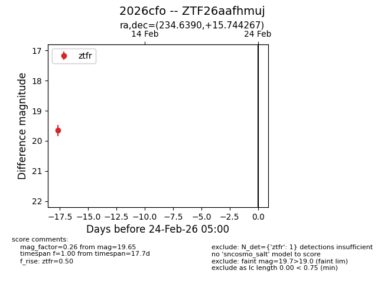
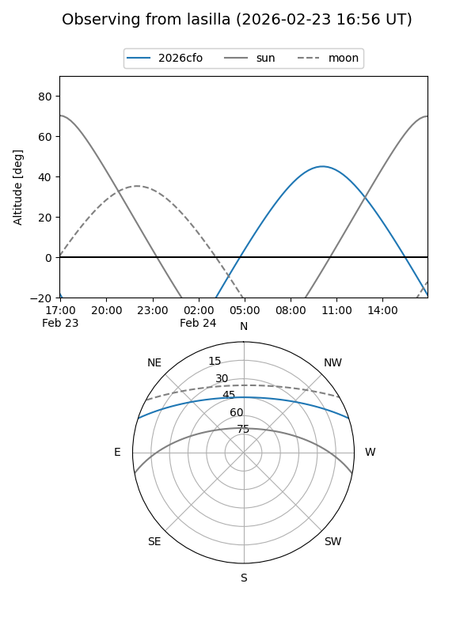
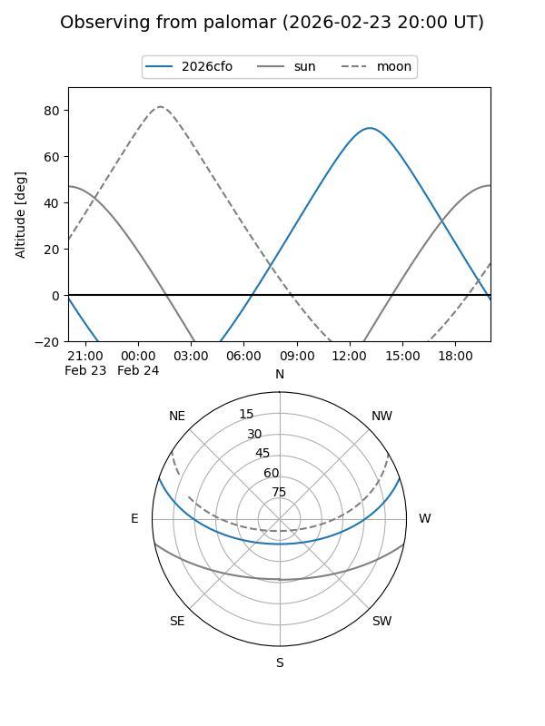

2026cfo
Target 2026cfo at 2026-02-24 09:08
Aliases and brokers:
FINK: link
Lasair: link
ALeRCE: link
TNS: link
YSE: link
alt names
ZTF26aafhmuj (ztf,fink_ztf)
2026cfo (tns,yse)
Coordinates:
equatorial (ra, dec) = 234.6390,+15.74427
equatorial (HMS+DMS) = 15:38:33.37,+15:44:39.36
galactic (l, b) = (25.3127,+49.68556)
Flags:
Photometry:
last ztfr=19.65
1 ztfr detections
Lightcurve

Visibility


Additional plots